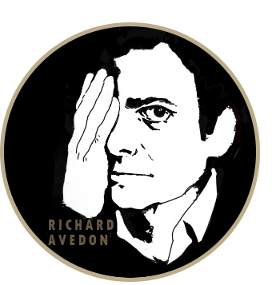

Memu
Toggle navigation

Home
Exhibition
Exhibition
Merchandise
Richard Avedon
Richard Avedon
Fashion Photography
Documentary Photography
Contact
Language
English
中文
Marilyn Monroe, actress, New York City, May 6, 1957
Bianca Jagger, Hollywood studio, January 25, 1972
Francis Bacon, artist, Paris, April 11, 1979
Mental Institution #9, East Louisiana State Mental Hospital, February 15, 1963
Dick Hickock, murderer of "In Cold Blood" by Truman Capote, Garden City, Kansas, April 1960
Andy Warhol, artist, New York, August 29, 1969
Natalia Semanova, Mouthpiece and Headphones by Tom Binns, New York, April 30, 1998
Ronald Fischer, beekeeper, Davis, California, May 9, 1981
Perry Smith, murderer of "In Cold Blood" by Truman Capote, Garden City, Kansas, April 1960
Dr. J. Robert Oppenheimer, physicist, Princeton, New Jersey, December 11, 1958
Napalm victim, Saigon, South Vietnam, April 29, 1971
Mental Institution #3, East Louisiana State Mental Hospital, Jackson, Louisiana, February 15, 1963